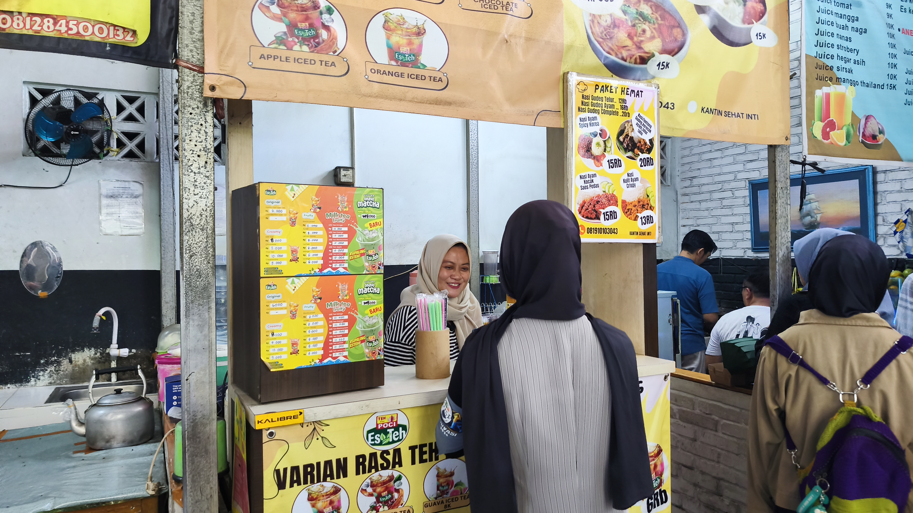
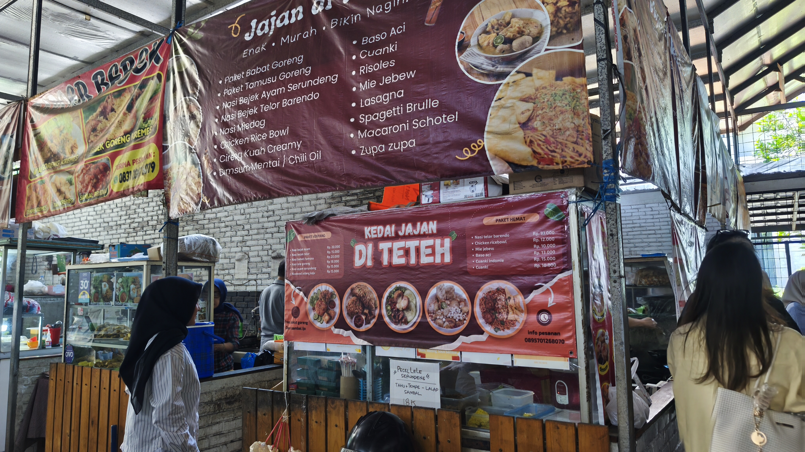

Selamat datang di Kantin Kita! Kami hadir untuk menyediakan berbagai pilihan makanan dan minuman yang sehat, bergizi, dan lezat untuk mendukung pola hidup sehat.
Kami percaya bahwa makanan sehat merupakan bagian penting untuk menjaga kesehatan dan meningkatkan semangat dalam menjalani aktivitas.
Lihat Menu

Kantin Kita merupakan sebuah website yang menyediakan informasi mengenai berbagai pilihan makanan dan minuman sehat.
Kami menawarkan berbagai menu makanan dengan memperhatikan kandungan gizi, kebersihan, dan kualitas bahan makanan yang digunakan.
Melalui Kantin Kita, kami ingin memberikan kemudahan bagi masyarakat untuk memilih makanan yang lebih sehat, bergizi, dan sesuai dengan kebutuhan sehari-hari.
Menjadi kantin pilihan yang menyediakan makanan dan minuman sehat, bergizi, higienis, serta berkualitas untuk mendukung pola hidup sehat.
Menyediakan makanan dan minuman sehat, menjaga kebersihan makanan, menggunakan bahan berkualitas, serta meningkatkan kesadaran masyarakat tentang pentingnya pola makan sehat.
Kantin Kita bertujuan untuk memberikan kemudahan kepada masyarakat dalam mendapatkan makanan dan minuman yang sehat serta bergizi. Kami juga ingin meningkatkan kesadaran akan pentingnya memilih makanan yang baik untuk kesehatan tubuh dan mendukung kebiasaan hidup sehat.
Menyediakan pilihan makanan yang memperhatikan kandungan gizi untuk mendukung kesehatan tubuh.
Mengutamakan kebersihan dalam proses penyajian makanan dan minuman.
Membantu membangun kebiasaan memilih makanan sehat dalam kehidupan sehari-hari.